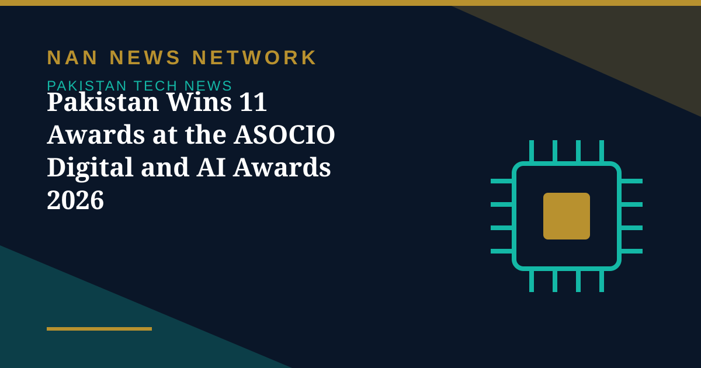

Pakistan Wins 11 Awards at the ASOCIO Digital and AI Awards 2026

Pakistan's digital and artificial intelligence (AI) industry has achieved a significant milestone after securing 11 awards at the ASOCIO Digital and AI Awards 2026 in Jakarta, Indonesia. The recognition highlights the country's growing capabilities in technology, digital transformation and AI-driven innovation across multiple industries. Organised by the Asian-Oceanian Computing Industry Organisation (ASOCIO), the awards ceremony took place on October 6, bringing together technology organisations from 26 economies across the Asia-Oceania region.
The winners, category by category
Pakistani organisations received recognition in diverse categories, including digital government, talent development, global business services, cybersecurity, education, healthcare, agriculture, financial services, workforce development and manufacturing. The Khyber Pakhtunkhwa Information Technology Board (KPITB) won the Digital Government Award, while REMIRE received the Talent Development Award and Symmetry Group Limited secured the Global Business Service Award. In the AI categories, SecureBeans was recognised for AI in Cybersecurity, PlanetBeyond Pakistan for AI for Public Good, the Center for Advanced Research in Engineering (CARE) for AI in Education, and DxVision AI for AI in Healthcare. Sybrid Private Limited won the AI in Smart Agriculture Award, while Unikrew Solutions (Private) Limited received the AI in Financial Services Award. Geekinn (Private) Limited was recognised for AI in Workforce and Future Skills, and SMART IS (Private) Limited won the AI in Manufacturing and Supply Chain Award.
What the breadth of the wins signals
The Pakistan Software Houses Association for IT and ITES (P@SHA) welcomed the achievement, with Chairman Dr Shoab A. Khan describing it as an important milestone for Pakistan's IT sector. The breadth matters as much as the count: the wins span public services, classrooms, hospitals, farms, banks, factories and the workforce itself, suggesting applied AI work rather than a single showcase project. A P@SHA delegation attended the event, comprising Chairman Dr Shoab A. Khan, Vice Chairman of ASOCIO and P@SHA Central Executive Committee member Muhammad Zohaib Khan, and Zain Tariq, Head of Special Projects at P@SHA. During the ceremony, the awards for Symmetry Group, SecureBeans and Geekinn were received on behalf of the organisations by members of the delegation.
From awards to exports
Awards do not by themselves create export revenue, but they do change how foreign buyers see Pakistani firms — and that reputational shift is exactly what programmes like Pak-US Tech Connect 2026 are built to convert into contracts. The challenge now is for the winning organisations, from provincial digital government to AI healthcare startups, to turn Jakarta's recognition into pilots, partnerships and paying clients abroad. If they do, October 2026 may be remembered as the month Pakistan's AI story moved from promise to proof.
Sources: ProPakistani; Business Recorder; The News, October 2026.